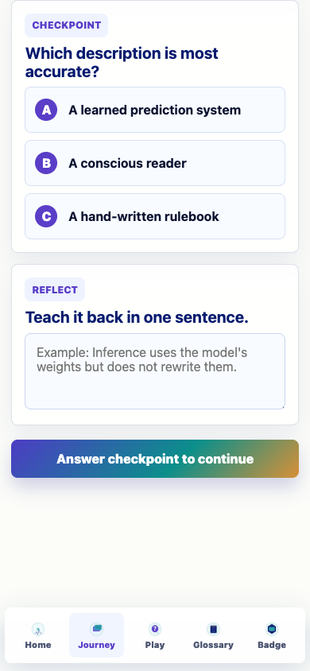

Prompt Life v0.6.1 - June 2, 2026
Bottom Navbar Transparency and Blur Clip
Updated the mobile bottom navigation so it is slightly more transparent and no longer lets the blur fog the content area above the nav.
What Changed
- Bumped the app version from
0.6.0 to 0.6.1.
- Reduced the bottom nav panel opacity to
rgba(255, 255, 255, 0.82).
- Shortened and clipped the nav backdrop layer with
overflow: hidden.
- Moved the blur surface lower with a masked pseudo-element so the top edge stays clear.
- Extended the blur surface downward below the viewport with a negative bottom offset.
Verification
npm run typecheck: passed.
npm run build: passed.
Browser CSS metrics confirmed the nav background, lower blur start, and offscreen downward extension.

Updated bottom nav: transparent panel, clipped top blur, and downward fade below the content area.